Статистический «взрыв», v.1
Наше Сообщество прошло уже определенный этап своего развития. У нас есть некоторые наблюдения и результаты, иными словами, у нас есть опыт. Итак, подведем черту. Данная статья является констатацией фактов в чистом виде (статистика). Основой для написания данной статьи послужили темы на форуме Сообщества, регистрационные данные его участников. Конфиденциальность сохранена. Статья подобного рода первая, но не последняя. По поводу добавления новых вопросов в будущие своды обращайтесь к автору статьи, к Регент. Приступим.
Актуальность данных на момент начала написание статьи: 12.04.2011 (время 11:27).
Основная информация
1) Количество зарегистрированных участников Сообщества (количество / % от количества)
Общее количество: 834 / 100%
Без группы: 458 / 55%
В группе: 376 / 45%
По группам: 376 / 100%
- Не уверен: 131 / 34%
- Сангвинар: 59 / 15%
- Энерговампир: 47 / 13%
- Гибрид: 37 / 10%
- Донор: 17 / 5%
- Не вампир: 57 / 15%
- Автор: 10 / 3%
- Скептик: 4 / 1%
«Штрафные» группы: 14 / 4%
В сумме, по вамп-группам (Санг + Энерго + Гибрид): 143 / 38%
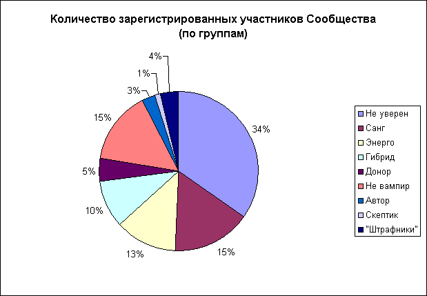
2) Количество потребляемой крови (только для групп Санг и Гибрид, в %)
- до 10 мл.: 13%
- 11-25 мл.: 6%
- 26 – 50 мл.: 37%
- 51 – 99 мл.: 13%
- 100 – 250 мл.: 31%
- 251 – 500 мл.: 0%
- 501 мл. и более.: 0%
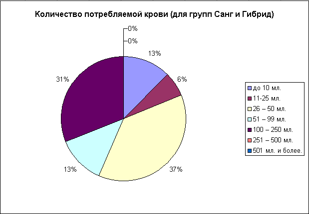
3) Частота приемов крови (только для групп Санг и Гибрид, в %)
- чаще, чем 1-н раз в 3-и дня: 0%
- раз в 3-и дня: 15%
- раз в неделю: 39%
- раз в 2-е недели: 31%
- раз в месяц: 15%
- реже, чем 1-н раз в месяц: 0%
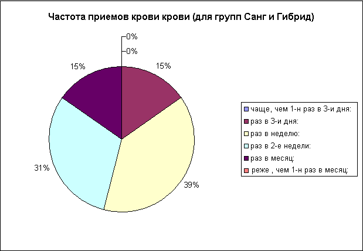
4) Средняя температура тела (только для групп Санг и Гибрид, в %)
- 34 – 34,5°С: 9%
- 34,6 – 35°С: 13%
- 35,1 – 35,5°С: 13%
- 35,6 – 36°С: 31%
- 36,1 – 36,5°С: 4%
- 36,6 – 37°С: 30%
- 37,1 – 37,5°С: 0%
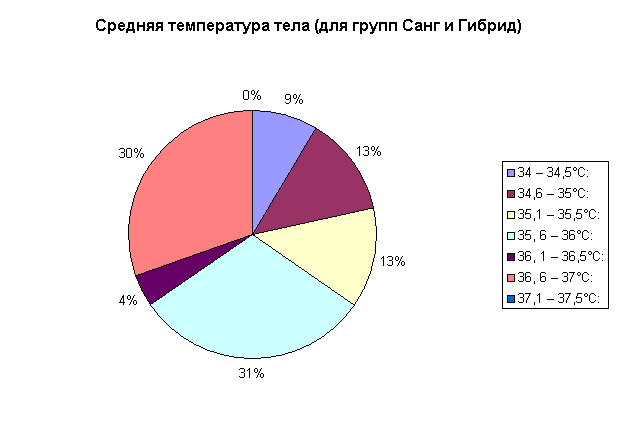
5) Предпочитаемый способ забора крови (только для групп Санг и Гибрид, в %)
- порезы: 56%
- мед. инструменты (шприцы и пр.): 44%
- укусы: 0%
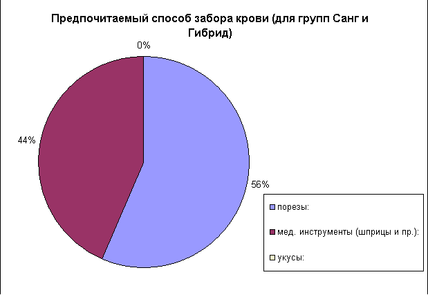
Побочная информация
6) Возраст, пол и география аудитории Сообщества.
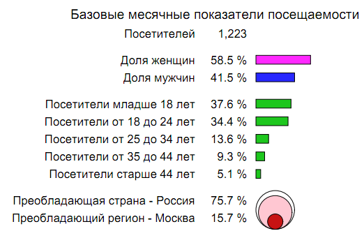
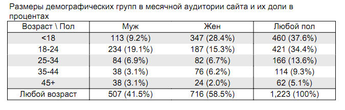
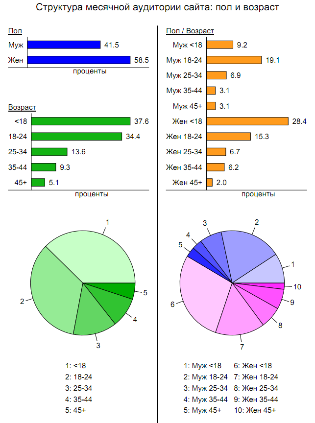
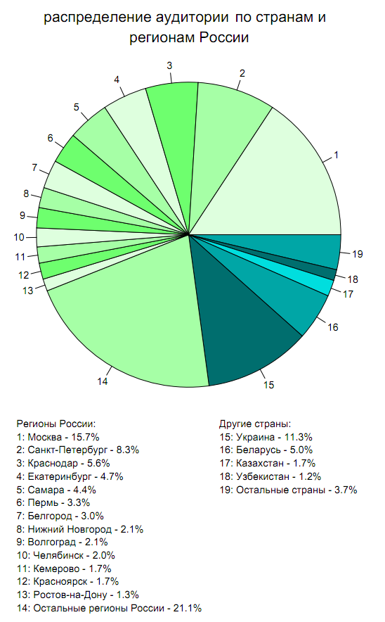
7) Постоянный, систематический рост популярности и известности Сообщества.
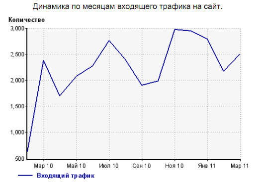
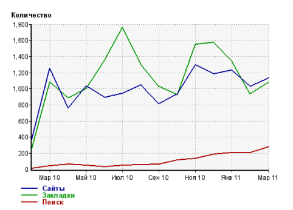
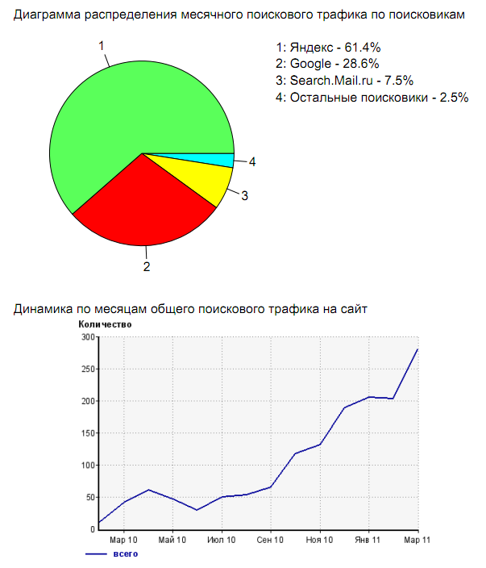
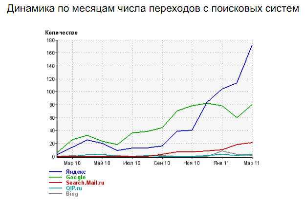
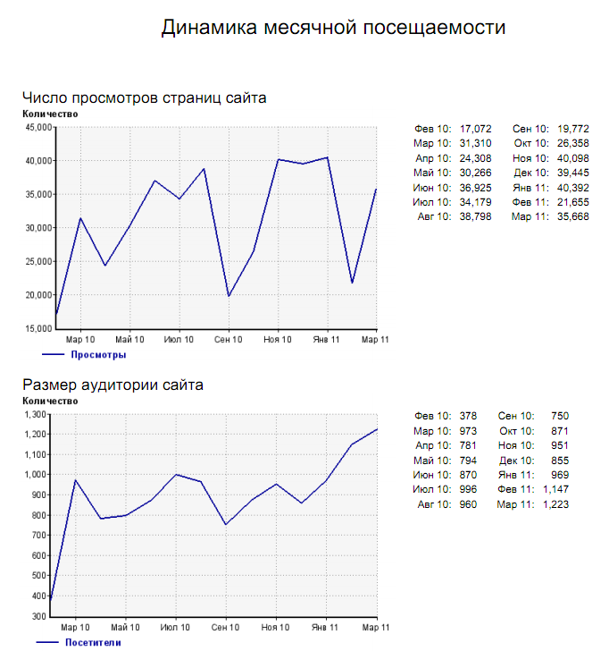
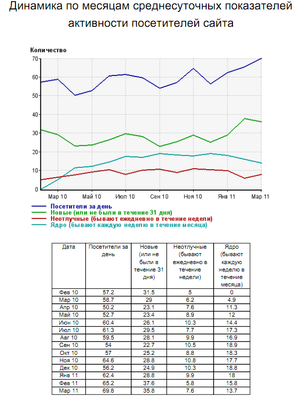
При подготовке материала были использованы:
1) темы на форуме Сообщества.
2) регистрационные данные участников Сообщества.
3) Статистические данные службы LiveInternet.
Статистика в комментариях не нуждается. (с)


Автор: Регент.
(собственность vampirecommunity.ru)
[Наверх]